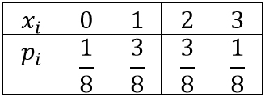
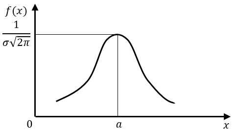

9 ВАЖНЕЙШИЕ РАСПРЕДЕЛЕНИЯ СЛУЧАЙНЫХ ВЕЛИЧИН
9.1 БИНОМИНАЛЬНОЕ РАСПРЕДЕЛЕНИЕ ДИСКРЕТНОЙ СЛУЧАЙНОЙ ВЕЛИЧИНЫ
Биноминальное распределение – распределение дискретной случайной величины \(X\), если вероятность того, что она примет конкретное значение \(X=k\), вычисляется по формуле Бернулли:
\(P_n(k)=C_n^kp^kq^{n-k}=\frac{n!}{k!(n-k)!}p^kq^{n-k}\)
Числовые характеристики биноминального распределения:
\(M[X]=np\)
\(D[X]=npq\)
Пример 1
Вероятность отказа детали за время испытания надежности равна 0.2
Найти среднее число отказавших деталей, если испытанию подвергнуто 10 деталей
Решение
По условию \(n=10\); \(p=0.2\)
Среднее число отказавших деталей – математическое ожидание \(M[X]=10⋅0.2=2\) детали
Пример 2
Монету бросили 3 раза
Найти математическое ожидание и дисперсию случайной величины \(X\) – числа выпадений герба
Решение
По условию \(n=3\); \(p=\frac{1}{2}\); \(q=\frac{1}{2}\)
\(P(X=0)=\frac{3!}{0!⋅3!}⋅\left(\frac{1}{2}\right)^0⋅\left(\frac{1}{2}\right)^3=\frac{1}{8}\)
\(P(X=1)=\frac{3!}{1!⋅2!}⋅\left(\frac{1}{2}\right)^1⋅\left(\frac{1}{2}\right)^2=\frac{3}{8}\)
\(P(X=2)=\frac{3!}{2!⋅1!}⋅\left(\frac{1}{2}\right)^2⋅\left(\frac{1}{2}\right)^1=\frac{3}{8}\)
\(P(X=3)=\frac{3!}{3!⋅0!}⋅\left(\frac{1}{2}\right)^3⋅\left(\frac{1}{2}\right)^0=\frac{1}{8}\)
1) \(M[X]=0⋅\frac{1}{8}+1⋅\frac{3}{8}+2⋅\frac{3}{8}+3⋅\frac{1}{8}=\frac{3}{2}\)
2) \(M[X^2]=0^2⋅\frac{1}{8}+1^2⋅\frac{3}{8}+2^2⋅\frac{3}{8}+3^2⋅\frac{1}{8}=3\)
3) \(D[X]=M[X^2]-M^2[X]=3-\left(\frac{3}{2}\right)^2=\frac{3}{4}\)

Или воспользоваться формулами:
\(M[X]=np=3⋅\frac{1}{2}=\frac{3}{2}\)
\(D[X]=npq=3⋅\frac{1}{2}⋅\frac{1}{2}=\frac{3}{4}\)
9.2 НОРМАЛЬНОЕ РАСПРЕДЕЛЕНИЕ НЕПРЕРЫВНОЙ СЛУЧАЙНОЙ ВЕЛИЧИНЫ (ЗАКОН ГАУССА)
Нормальный закон распределения наиболее часто встречаются на практике: рост человека, ошибки стрельбы, вес клубней картофеля, колебания курса акций и т. д.
Непрерывная случайная величина имеет нормальный закон распределения, если ее плотность задается формулой:
\(f(x)=\frac{1}{σ\sqrt{2π}}e^{-\frac{(x-a)^2}{2σ^2}}\)
где:\(xϵR\)
\(a\) – любое действительное число
\(σ > 0\)
Числовые характеристики:
\(M[X]=Mo[X]=Me[X]=a\)
\(D[X]=σ^2\)
\(As=Ex=0\)

Пример
Непрерывная случайная величина \(X\) задана плотностью распределения вероятностей:
\(f(x)=\frac{1}{2⋅\sqrt{2π}}⋅e^{-\frac{(x+1)^2}{8}}\)
Найти математическое ожидание, дисперсию и среднеквадратическое отклонение этой случайной величины
Решение
Математическое ожидание \(M[X]=-1\)
Дисперсия \(D[X]=4\)
Среднеквадратическое отклонение \(σ[X]=2\)